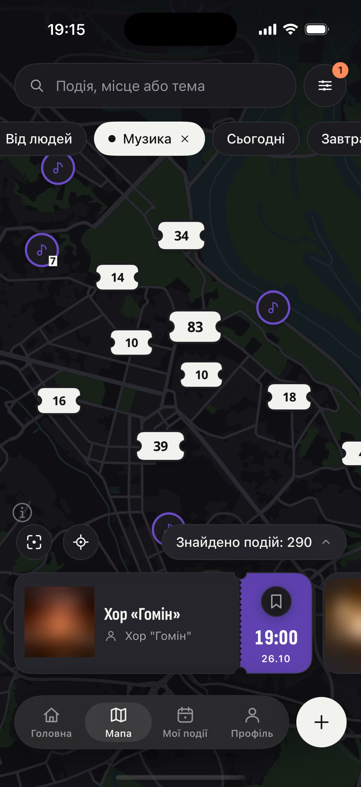
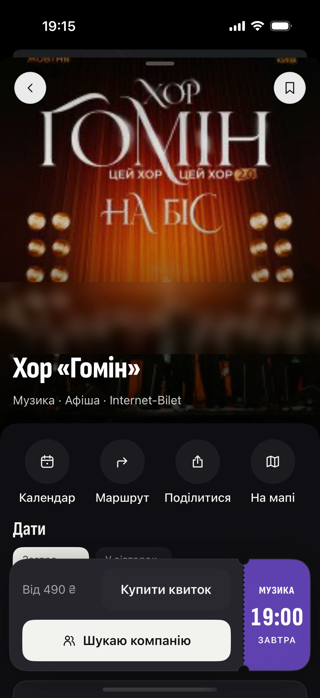
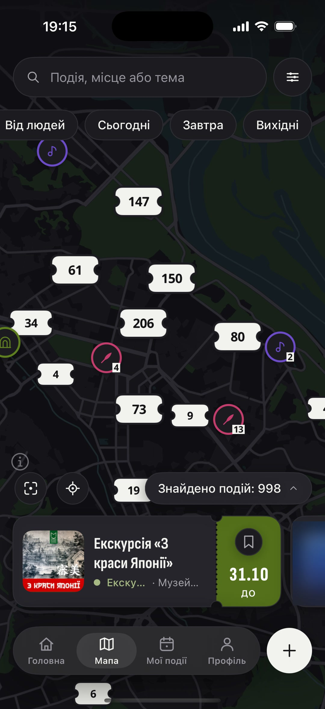

що робити в києві,
коли
…коли дощ ↖
…коли без компанії ↖
…коли з дітьми ↖
…коли пʼятниця ввечері ↖



Івасик-Телесик
Новий український театр
ДІТЯМ
12:00
СУБОТА
Мавка. Циркове шоу
ЦКМ КПІ
ДІТЯМ
16:00
СУБОТА
Лікар Айболить
Муніципальний театр ляльок
ДІТЯМ
11:00
НЕДІЛЯ
концерти — під дахом ☔
можна зібрати компанію
вистави на вихідні 🧸
сотні подій — на одній мапі
що б ще загуглити? 👇
Поряд
Є куди. Буде з ким.
безкоштовно
Apple, логотип Apple і App Store є торговельними марками Apple Inc.
Google Play і логотип Google Play є торговельними марками Google LLC.